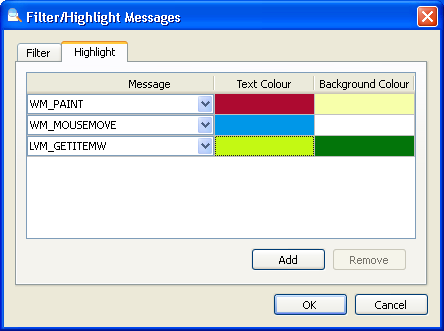
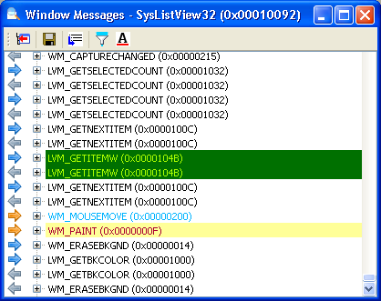

You can monitor messages sent to a window by right clicking on
that window in the tree and selecting "Messages...". Alternatively,
you can use the picker to select a
window, and hold down the Control key when releasing the mouse button.
A pane will open displaying any further messages that the selected
window receives. You can view the message names (as defined by Windows)
as well as their parameters and return value.
An example of the Messages dialog.
The left-most column of this pane displays an arrow icon, indicating
how the message event was delivered. A blue arrow pointing right
indicates
that the message was sent to the window using the SendMessage function.
That window will process the message and return a value. A faded blue arrow
pointing left
indicates that the message has returned, and will include the return value.
An orange arrow pointing right
indicates that the message was posted to the queue (using PostMessage or similar
functions). These do not have a return value, as they are processed asynchronous.
The next column displays the message names, their integer ID is displayed
in hex next to it. Messages in the range 0x0400 to 0x7FFF are for use by private
window classes, and are displayed as WM_USER + n, where n is
the decimal integer added to the base 0x0400. Messages in the range 0x8000 to
0xBFFF are available for use by applications, and are displayed as
WM_APP + n, where n is the decimal integer added to the base
0x8000. Finally, messages in the range 0xC000 to 0xFFFF are messages for
use by applications, which are registered with a string name. That name will
be displayed, with the integer ID in hex next to it.
For some messages, extra data such as structs pointed to by wParam or lParam is shown in the list.
Filtering Messages
Often you will be looking for specific messages sent to the window. For
this case, Window Detective can exclude messages that you are not interested
in, so you can focus on the ones you are interested in. Clicking the filter
button  will open the
"Filter/Highlight Messages" dialog on the filter tab. Here you can select
which messages to include or exclude.
will open the
"Filter/Highlight Messages" dialog on the filter tab. Here you can select
which messages to include or exclude.
The list includes all known messages applicable to the window. If you want to include or exclude other unknown messages (such as WM_USER or WM_APP messages), tick or untick the "All Others" checkbox. If there are specific custom messages that you want to include or exclude, you can define them in window_messages.ini, then they will appear in the list.
Highlighting Messages
In addition to filtering messages, you can also highlight messages in
the list. The foreground (text) colour and the background colour can be
changed for specific messages, so that you can easily identify them in the
list. Clicking the highlight button  will open the "Filter/Highlight Messages" dialog on the highlight tab. Here
you can add or remove highlights, select which type of message they are applied to,
and choose the highlight colours.
will open the "Filter/Highlight Messages" dialog on the highlight tab. Here
you can add or remove highlights, select which type of message they are applied to,
and choose the highlight colours.
In the example below, highlights for three types of messages have been added:
WM_PAINT, WM_MOUSEMOVE and
LVM_GETITEMW (a ListView message).
|

The Filter/Highlight dialog, showing a number of highlights. |

An example of the highlights applied to the messages. |
Note: Filters and highlights are only applied to messages that are recieved after those filters or highlights are set.